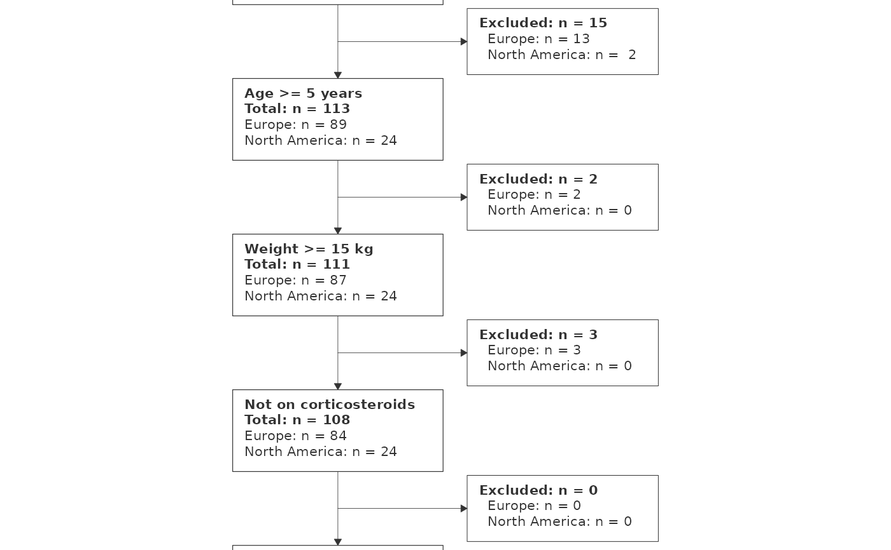

Reduces the CGD recurrent-events dataset to one row per patient and adds a
region column grouping the 14 trial centres into North America and Europe.
survival ships with every R installation so no extra packages are needed.
Value
A tibble with 128 rows and columns id, center, region, age,
weight, sex, inherit, steroids, treat, status,
follow_up_days.
Examples
cgd <- prep_cgd_example()
cohort <- new_cohort(cgd, label = "Randomised", id_col = "id",
group_col = "region") |>
include_if(age >= 5, "Age >= 5 years") |>
include_if(weight >= 15, "Weight >= 15 kg") |>
include_if(steroids == 0, "Not on corticosteroids") |>
include_if(follow_up_days > 0, "Positive follow-up time")
consort_plot(cohort)
